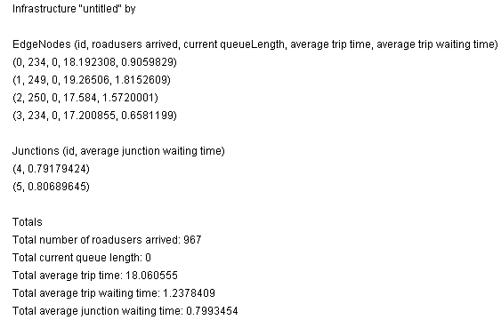

1. Editor
2. Simulator
3. Evaluation Tools
 a. Data
a. Data
 b. Statistics
b. Statistics
4. An Example Session
5. Algorithms
Extracted Data
The data for statistics is recorded for each cycle when the simulator is running, and compacted as the number of cycles grows.
The statistics window will display precise info for the whole map, and for a subset of the nodes it can be displayed by using the Configuration Dialog of the Simulator.

The data can be saved or compared to other previously saved sets of data.
Check the Tracking windows to oversee things: when the statistics in these windows show no change (fluctuate in a very predictable manner or just continue linearly) most data that can be calculated out of the current simulation has been extracted.
Also, when being only interested in extracting numerical data, toggle off the view and cycle counter of the simulator to speed things up. Alternatively, toggle the view on from time to time to check on the traffic situation you were interested in, or leave the cycle counter on to know when to stop things.
It is also possible to export the gathered data to an ASCII text file, which will look like this:
 # Data exported by GLD tracking window
# Data exported by GLD tracking window
 #
#
 # Infrastructure: "Simple" by GLD Team
# Infrastructure: "Simple" by GLD Team
 # Simulation: "Simple"
# Simulation: "Simple"
 # Tracking data: "average trip waiting time"
# Tracking data: "average trip waiting time"
 # Measured:
# Measured:
 #
#
 # Format:
# Format:
 #
#
 337 11.623377 0.0000000 11.623377
337 11.623377 0.0000000 11.623377
 634 14.370861 21.229507 12.634854
634 14.370861 21.229507 12.634854
This data (with the "#" rows omitted) can be imported into a sophisticated statistical program for further investigation.